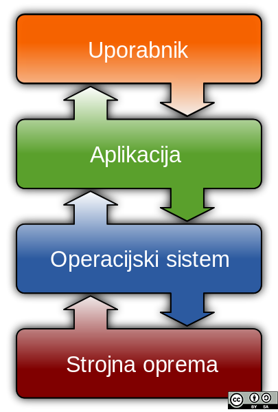

Operacijski sistem je osnovna programska oprema, ki upravlja z računalnikom in deluje kot vmesnik med uporabnikom in strojno opremo računalnika.
Preprosto bi lahko rekli, da je operacijski sistem program vseh programov - upravlja s strojno in programsko opremo.
Je osnova, ki nadzira delovanje celotnega računalnika in skrbi, da se tudi drugi programi dobro “počutijo” in pravilno delujejo. Ob zagonu računalnika se namesti v pomnilnik in prevzame nadzor nad njim.
Sleherni računalnik je opremljen z operacijskim sistemom – nekateri jih imajo celo več, a ne hkrati. Najbolj uveljavljeni operacijski sistemi so iz družin Windows (razvija Microsoft), Macintosh (razvija Apple) in Unix.

Avtor: Golftheman
• Dodeljevanje virov (CPE, pomnilniški prostor, vhodno/izhodne naprave) procesom,
• Časovno razporejanje opravil,
• Reševanje konfliktnih situacij (sočasni dostopi do virov),
• Optimizacija in nadzira uporabe virov,
• Omogočanje dela uporabnikom...